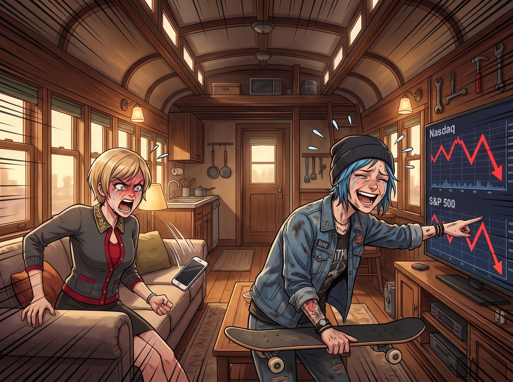

合規對轟

當 Victoria 看到那份印著 Chase 財團專屬浮水印的季度財務報表時，她那聲尖叫差點把二號車廂頂部的防雨防水布給掀翻。
「百分之四？！這個蠢貨拿著我信託基金裡整整八百萬美金的流動性資產，過去一年的回報率居然只有百分之四？！」
Victoria 氣得把那台頂配的手機狠狠摔在沙發上，名媛的臉孔因為極度的資本屈辱而扭曲。
坐在對面保養滑板的 Chloe 探頭看了一眼螢幕上的納斯達克和標普 500 的走勢圖，立刻發出了喪心病狂的爆笑聲：「老天啊 Victoria！連我這個天天泡在車床和機油裡、金融知識約等於零的藍領技師都知道，這幾年閉著眼睛買標普 500 都能有百分之二十以上的漲幅，納指更是直接起飛！妳那位常春藤名校畢業的基金經理，居然連最陽春的散戶指數型基金都跑不贏？一隻蒙著眼睛射飛鏢的猴子都比他會賺錢！」
一、堵得啞口無言的合規防禦
「閉嘴，Price！」Victoria 崩潰地抓著頭髮。
她剛才已經打電話把那位基金經理劈頭蓋臉地罵了一頓，但讓她感到無比憋屈、甚至吃了一個巨大悶虧的是——對方在法律和合規層面上，簡直無懈可擊。
那位基金經理在電話裡的語氣充滿了華爾街式的傲慢與推諉。他引經據典，搬出了過去三年主流媒體對高債息、高通膨、油價飆升的末日預測，聲稱美股隨時會迎來史詩級爆雷。
「Chase 小姐，」經理在電話裡義正辭嚴，「作為您的信託受託人，我的首要職責是信託義務與風險合規。根據您的投資政策聲明中的防守型條款，我必須為您配置大量的短期國債、黃金 ETF 以及抗通膨的防禦型價值股。我沒有跑贏大盤，是因為我選擇了合規與穩健，保護了您的本金不受潛在的系統性風險侵害。」
這番合規防禦把 Victoria 堵得啞口無言。在美國金融法規裡，基金經理業績爛並不犯法，只要他證明自己是出於審慎投資人原則進行操作，客戶就連告他都沒有門路。Victoria 只能硬生生吞下這口惡氣，不僅錯失了科技股暴漲的紅利，還要白白支付每年高達百分之二的高額主動管理費。
二、深入交易流水的精密狙擊
就在 Victoria 絕望地倒在沙發上，準備接受自己被一個合法廢物剝削的事實時，一隻端著熱伯爵茶的白皙小手，輕輕將茶杯放在了她面前。
「Victoria 學姐，請不要因為華爾街的詭辯而氣餒。在二號車廂，我們從不為別人的合規性買單。」
實習生 Lily 穿著粉色小熊睡衣，推了推反光的圓框眼鏡。她打開自己的筆記本電腦，只用了三十秒，就透過 Chase 財團的內部權限，調出了那位基金經理過去三年的完整交易流水明細。
「經理先生說他嚴格遵守了防守型的合規策略，這句話在宏觀層面上沒有撒謊。」Lily 軟糯的聲音像是一把精密的解剖刀，開始對這份財報進行物理級別的肢解，「但問題出在他的執行路徑上。」
Lily 將電腦螢幕轉向 Victoria：「您看，為了配置他口中那些安全的短期國債和防禦型資產，他並沒有直接為您購買市場上管理費極低的基礎 ETF。」
「那他買了什麼？」Victoria 皺起眉頭。
「他將您的資金，全部買入了他自己所屬銀行的內部發行防禦型共同基金。」Lily 抬起頭，大眼睛裡閃爍著令人不寒而慄的掠奪光芒，「這些內部基金的底層資產依然是國債，但卻收取了高達百分之一點五的額外管理費。這在華爾街被稱為雙重收費。」
Chloe 愣了一下：「這不就是把客戶的錢從左口袋放到右口袋，然後兩邊都收過路費嗎？」
三、合規對合規的終極一擊
「完全正確，Price 學姐。」Lily 點頭，雙手開始在鍵盤上飛速敲擊，「雖然規避市場風險是合法的，但根據美國證券交易委員會最新修訂的最佳利益法規，投資顧問在向客戶推薦金融產品時，必須在具備同等投資效益的情況下，選擇成本最低的產品，並消除或完全披露任何利益衝突。」
Lily 敲下回車鍵，一份格式完美的證交會投訴草案已經生成。
「他利用防禦性合規作為藉口，掩蓋了他向自家機構輸送利益、惡意疊加管理費的違規事實。這構成了嚴重的未披露利益衝突與違反信託最佳利益義務。」實習生轉過頭，對著已經目瞪口呆的 Victoria 露出了一個純潔無暇的微笑：「學姐，我剛剛以您的名義起草了一封律師函，並附上了這份吹哨人檢舉草稿。我們不要求他賠償沒賺到的納斯達克利潤——因為那在法理上不支持；我們要求他全額退還過去三年收取的所有主動管理費、隱藏的基金疊加費，外加百分之八的法定懲罰性利息。否則，這份報告明天早上就會出現在執法部主管的辦公桌上，他的操盤執照將被永久吊銷。」
三分鐘後，Victoria 撥通了那位經理的電話。這一次，名媛沒有尖叫，也沒有憤怒。她只是用一種極度優雅、冰冷，甚至帶著一絲殘酷的語氣，將 Lily 剛才的法律條文一字不漏地唸了一遍。
電話那頭死一般的寂靜，隨後傳來了經理因為極度恐懼而發抖的喘息聲。剛才那個滿口宏觀經濟與合規防禦的華爾街精英，防線在真正的行政黑魔法面前瞬間土崩瓦解，連連哀求給他兩天時間走內部流程，他會把所有違規收取的費用一分不少地退回信託帳戶。
四、深藏功與名的實習生
掛斷電話，Victoria 彷彿重獲新生。她看著 Lily，眼神裡充滿了敬畏與狂熱：「Lily……妳簡直是華爾街的死神。」
「我只是個遵守規則的實習生，學姐。合規性是一把雙面刃，既然他想用合規來掩蓋無能，我們就用更高維度的合規來沒收他的財產。」Lily 謙虛地低下了頭。
Max 默默地舉起相機，將 Victoria 滿臉狂喜、Chloe 在一旁吹口哨的畫面拍了下來。
而一直在旁邊安靜削蘋果的 Kate，這時溫柔地將一塊削成小兔子形狀的蘋果遞給 Victoria。「Victoria，雖然那個經理先生錯過了納斯達克的漲幅，但他現在願意把管理費都退給妳，說明他的良知還沒有完全被通膨吞噬呢。」小天使的笑容依然聖潔無比，「我們要感謝主賜予他迷途知返的勇氣，對吧？」
看著小天使那雙清澈的眼睛，再看看已經幫她合法敲詐回上百萬美金的實習生，Victoria 咬了一口蘋果，在心裡默默祈禱：希望華爾街的那些精英們，永遠不要知道這個偏遠的火車廂裡，到底藏著怎樣的合規怪物。